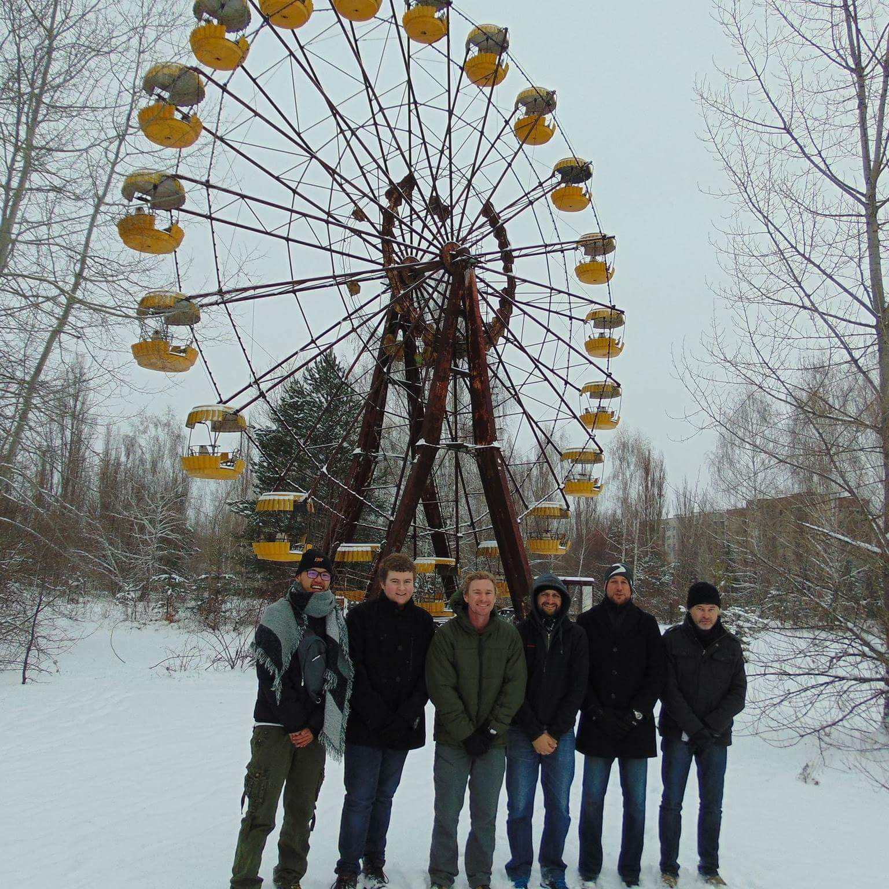

I am a student of International Relations at Warwick University, UK, also holding a Bachelor's degree in Politics and International Relations from Goldsmiths University of London. My professional background includes serving as a Web Content Editor at Europe's largest supplier of cinema and film production equipment, as well as contributing to 'Outside the Bubble' news as a content writer / reporter, analysing and communicating diverse perspectives of UK current affairs.
Beyond academia and professional endeavours, my interests and skills paint a more comprehensive picture of myself. Proficient in writing and research, I delve into diverse topics with a keen eye for detail as well as genuine curiosity. I possess HTML/CSS coding proficiency as evidenced through the creation and hosting of this website, as well as a small YouTube channel, showcasing my interest in technology and its seamless merging with content creation and delivery. My fascination towards varied cultures helps foster a global perspective when paired with an interest in history, politics and current affairs, as well as dedication for field-work and traveling - key in gaining first-hand experience to afford myself a well-rounded and informed foundation for shaping impartial and insightful opinions.